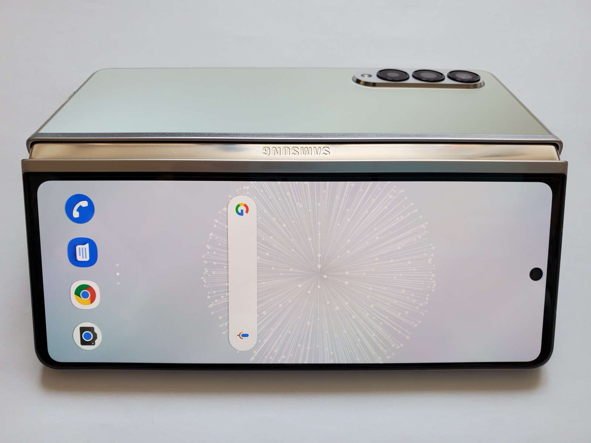

APPLE독립 리서치 · 공식 로고는 브랜드 정책에 따라 미사용
Product Intelligence · 260802
Apple 폴더블 iPhone
예상 사양, 장점과 단점, 구매 전 확인해야 할 다섯 가지 기준
🧭 Executive Summary
1세대 혁신성은 높지만,
구매는 실측 검증 뒤가 맞습니다.
화면을 펼치는 순간 아이폰과 작은 태블릿의 경계가 사라질 수 있습니다. 다만 지금 확인되는 것은 제품이 아니라 서로 다른 신뢰도의 보도와 공급망 정보입니다.
가장 큰 변화는 화면 크기가 아니라 사용 방식입니다.
문서 비교, 독서, 영상, 원격 업무는 좋아질 수 있지만 앱 최적화가 실제 가치를 좌우합니다.
$1,999+예상 시작가
7.8″내부 화면
5구매 판단 기준
📱 Expected Specifications
현재까지 겹치는 보도
아래 수치는 공식 사양이 아닙니다. 충돌하는 수치는 하나로 합치지 않고 범위와 불확실성을 그대로 표시합니다.
| 항목 | 현재 보도 | 상태 |
|---|---|---|
| 형태 | 책처럼 펼치는 북 스타일, 외부 화면＋내부 대화면 | 루머 |
| 화면 | 외부 5.3~5.5인치 · 내부 7.6~7.8인치 | 복수 보도 |
| 칩·메모리 | A20 Pro 예상 · 12GB RAM · C2 5G 모뎀 보도 | 루머 |
| 배터리 | 4,883mAh 보도와 5,400~5,800mAh 루머 상충 | 충돌 |
| 가격·일정 | 약 $1,999~2,500 · 2026년 가을 공개설 | 루머 |
📷 Visual Evidence
실제 폴더블 기기에서
확인할 수 있는 형태

{kind=link}
⚖️ Trade-offs
얻게 되는 것과
감수해야 하는 것
✅ 장점
- 아이폰 휴대성과 아이패드 미니급 작업 공간 결합
- 메일＋일정, 문서 비교 등 나란히 작업에 유리
- 애플 생태계와 기기간 연속성 활용
⚠️ 단점
- 2,000달러 이상 높은 진입 가격과 수리비
- 힌지·내부 화면 등 1세대 내구성 불확실
- 망원 카메라와 Face ID 제외 가능성
🔬 Deep Report Mode
시장 맥락·경쟁 구도·
세 가지 시나리오
심층보고서모드는 단순히 글을 늘리지 않습니다. 확인 가능한 근거를 더 넓게 수집해 반대 논리와 실패 가능성까지 함께 검토합니다.
| 시나리오 | 전제 | 사용자 영향 | 확인 신호 |
|---|---|---|---|
| 낙관 | 주름·무게·앱 최적화 해결 | 아이폰과 미니 태블릿 통합 | 실측 리뷰와 앱 지원 |
| 기준 | 높은 가격과 일부 1세대 한계 | 얼리어답터 중심 확산 | 보증·수리 정책 |
| 보수 | 내구성과 배터리 검증 지연 | 2세대 대기 수요 증가 | 출시 지연·초기 불량률 |
🔎 Decision Criteria
발표보다 리뷰에서
봐야 할 다섯 가지
01
실측 무게와 균형
펼쳤을 때 손목 부담과 한 손 조작성을 확인합니다.
02
실제 사용 시간
용량보다 외부·내부 화면별 사용 시간을 봅니다.
03
주름과 반사
측면 조명과 손가락 촉감 평가가 중요합니다.
🧾 Complete Sources
모든 자료의 출처
기사, 실제 사진, 로고 정책, AI 생성 이미지까지 문서 최하단에서 빠짐없이 구분합니다.
| 유형 | 자료명 | 제공자 | 상태·사용 범위 |
|---|---|---|---|
| 기사 | Foldable iPhone 루머 종합 | MacRumors | 형태·화면·칩·가격 범위 |
| 더미 보도 | iPhone Fold 더미 모델 | 9to5Mac · 2026.06.07 | 실제 판매 제품 아님 |
| 공식 자료 | iPhone 17 공식 발표 | Apple Newsroom | 현재 공식 iPhone 기준선 |
| 실제 사진 | Galaxy Z Fold3 5G | Ka Kit Pang | CC BY-SA 4.0 · 폼팩터 참고 |
| 로고 정책 | 상표·로고 사용 지침 | Apple | 공식 그래픽 로고 미사용 근거 |
| AI 이미지 | 상단 한글 두들 인포그래픽 | OpenAI Image Generation | 2026.08.02 생성 · 공식 이미지 아님 |
Apple과 iPhone은 Apple Inc.의 상표입니다. 이 독립 보고서는 Apple Inc.가 승인·후원·보증하지 않았습니다.